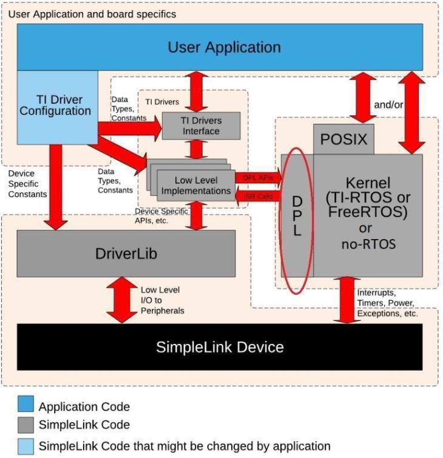

Kernel Configuration¶
The FreeRTOS kernel is configured by FreeRTOSConfig.h file which can be found
in {SDK_INSTALL_DIR}\kernel\freertos\builds\{DEVICE}\release\pregenerated_configuration,
you can change the configuration file so that the kernel will be tailored to your application.
For more information about kernel configuration, please see FreeRTOS Kernel Configuration Overview.
In the SimpleLink Wi-Fi SDK, all FreeRTOS application routines are abstracted using the following:
- A POSIX layer, which was designed for use with this SimpleLink Wi-Fi SDK
- A Driver Porting Layer (DPL) for use by the TI Drivers
You can find example FreeRTOS projects that use the SimpleLink Wi-Fi SDK in the examples/rtos/
folder for all supported IDEs.
No native FreeRTOS examples are provided in this SimpleLink Wi-Fi SDK. If you want to use the native FreeRTOS routines without the abstractions provided by the SimpleLink Wi-Fi SDK, documentation is provided on the FreeRTOS website.
POSIX Support¶
Portable Operating System Interface (POSIX) is an IEEE industry API standard for OS compatibility. The SimpleLink Wi-Fi SDK provides support for POSIX APIs on top of FreeRTOS. For a more detailed description of the POSIX support in the SimpleLink Wi-Fi SDK, please refer to the POSIX Overview Workshop
Driver Porting Layer (DPL)¶
The TI Drivers (e.g. UART2, I2C, Power Management, etc.) are written to be used with the Driver Porting Layer (DPL). The SimpleLink Wi-Fi SDK includes a DPL implementation for FreeRTOS

Using FreeRTOS with CCS¶
In order to use FreeRTOS within CCS, you must specify the location of the FreeRTOS installation. To do this, follow these steps:
FreeRTOS modules¶
The application and the ICall layer communicate using events to call the OS and made context switch. The table below shows the modules that are used by FreeRTOS.
| Example flow | FreeRTOS modules |
| 1. Application Thread Listen (pend) on event number | SemaphoreP (used through DPL layer) and mq_send / mq_receive Blocking Mqueue (POSIX queues) |
| 2. Stack Thread Doing whatever he asked to do by the app called | TimersP (used through DPL layer) |
| 3. Stack Thread Push a message (or number of messages) into the queue and post an event Queue | mq_send / mq_receive NON-Blocking Mqueue (POSIX queues) |
| 4. Application Thread OS wakes the application thread and the application pulls the message from the Non-OS queue | mq_send / mq_receive NON-Blocking Mqueue (POSIX queues) |
| 5. Application Thread Listen (pend) on event number - cycle has completed | mq_send / mq_receive Blocking Mqueue (POSIX queues) |